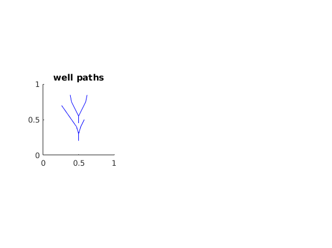

Contents
Example 2
This script contains an example a well branching. It contains several well-intersections.
% Copyright (C) 2016 Runar Lie Berge. See COPYRIGHT.TXT for details. %close all; clear
Set path to voronoi2D
%addpath ../
Set well paths
voronoi2D store well as arrays in cells. Each row in an array correspond to a corner of the path.
well = {[0.5,0.2; 0.5,0.3;0.47,0.4;0.4,0.5; 0.33,0.6;0.26,0.7], ...
[0.5,0.3;0.53,0.4;0.58,0.5],...
[0.5,0.45;0.5,0.55;0.45,0.65;0.4,0.75;0.38,0.85],...
[0.5,0.55;0.55,0.65;0.6,0.75;0.62,0.85]};
% We now plot the wells to see how they look like
figure(); hold on
subplot(1,3,1)
plotLinePath(well,'color','blue');
axis equal tight
axis ([0,1,0,1])
title('well paths')
drawnow
 Setting gridding parameters:
Before we call the gridding fuctions we set some parameters.
gS = 1/24; % The grid size wGf = 0.25; % The relative size of well cells compared to gS fGf = 0.5; % The relative size of fault cells compared to gS nRs = 2; % Number of refinement steps towards the well mLs = [0.1,0.05]'; % This sets the distance from a well where each % each refinement step should start.
Create Grid
We can now create the composite Pebi grid:
Gc = compositePebiGrid(gS, [1, 1], ... 'wellLines', well, 'wellGridFactor',wGf, ... 'mlqtMaxLevel', nRs,'mlqtLevelSteps', mLs);
Undefined function or variable 'c'. Error in compositePebiGrid (line 152) c Error in wellBranching (line 43) Gc = compositePebiGrid(gS, [1, 1], ...
Plot composite grid
%And plot it subplot(1,3,2) plotGrid(Gc, 'facecolor','none') axis equal tight title('compositePebiGrid(...)') drawnow
Set pebiGrid Parameters:
We now use the other wrapper function to create a PEBI-grid using distmesh:
eps = 1/12; % This parameter defines the refinement around the wells. The % cell size are ~gS - exp(-(distance from well)/eps);
Generate grid
distmesh will most likely converge in the maximum number of iterations. This is usually not a problem, since the grid most likely is good before the convergence requirement is met.
Gdist = pebiGrid(1/24, [1, 1], 'wellLines', well, 'wellGridFactor', 0.5^2, 'wellRefinement', true, 'epsilon',eps);
Plot pebiGrid
subplot(1,3,3) plotGrid(Gdist,'facecolor','none') axis equal tight title('pebiGrid(...)')